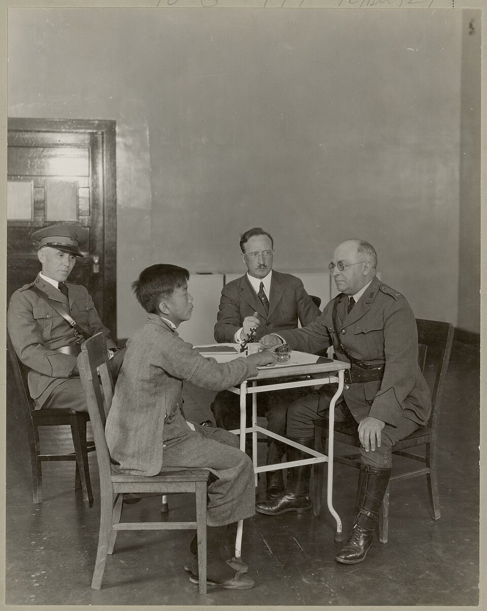

Directions: Study the photograph and the background note, then answer the questions.

Background. Angel Island, in San Francisco Bay, was the main immigration station on the West Coast. Because federal law excluded most Chinese immigration, Chinese arrivals were questioned in detail about their families and villages, and their answers were checked against the answers of witnesses. An applicant could be held for weeks while officials decided whether he had the right to enter. The quota laws of the same decade decided most European cases in advance, by fixing how many people of each nationality could come at all.
1. What details in the photograph show that this is an official judgment about the seated man, and not a conversation among equals? Name at least three.
2. Under the National Origins Act, the annual quota for Greece was 100 and the quota for Germany was 51,227. Show the arithmetic of the law that produced numbers this far apart: name the rate, the census year, and why that year favored Germany.
3. At Dayton in 1925, William Jennings Bryan testified that the days of creation in Genesis did not necessarily mean twenty four hour days, and that his impression was that they were periods. Why did that testimony damage the prosecution he had joined?
4. Before sentencing in 1927, Bartolomeo Vanzetti told the court that he was suffering because he was a radical and because he was an Italian. In one or two sentences, state the argument he was making about his own trial.
1. What details in the photograph show an official judgment, not a conversation among equals? Any three, tied to the point. Three officials face one seated applicant across a table. Two of the officials wear uniforms, one with a Sam Browne belt, marking state authority. Papers, an inkwell, and a record book sit on the table, marking a file being built. The applicant sits alone on the near side while the officials sit together on the far side. The bare room is an office, not a home or a workplace of the applicant. (Blueprint 8)
2. Show the arithmetic of the law that produced a Greek quota of 100 and a German quota of 51,227. The National Origins Act set each country quota at 2 percent of its foreign born counted in the census of 1890. In 1890 the German born population in the United States was large, so 2 percent of it produced 51,227 places. The Greek born population in 1890 was very small, because Greek immigration came later, so the Greek quota fell to the statutory minimum of 100. The year, not only the rate, did the ranking. (Blueprint 8)
3. Why did Bryan's testimony damage the prosecution he had joined? Bryan joined the prosecution to defend the Butler Act, which rested on a literal reading of the Bible account of creation. As the prosecution Bible expert, he conceded on the stand that the days of creation could be periods rather than twenty four hour days. That admission gave the defense the interpretation it had argued for, from the witness the prosecution had presented as its authority, and newspapers across the country reported the concession. (Blueprint 9)
4. State the argument Vanzetti was making about his own trial. Vanzetti argued that the court had judged his identity rather than the evidence: that he was being punished for his anarchist beliefs and his Italian birth, not for the South Braintree robbery. Accept answers that name both grounds he stated, radical and Italian, and connect them to his claim about the trial. (Blueprint 9)
Teacher note. This check is formative. Question 1 is the observation diagnostic. Students who describe only an interview have not yet read a photograph for power. Question 2 predicts success on the writing task, because the census year is the fact students most often drop.